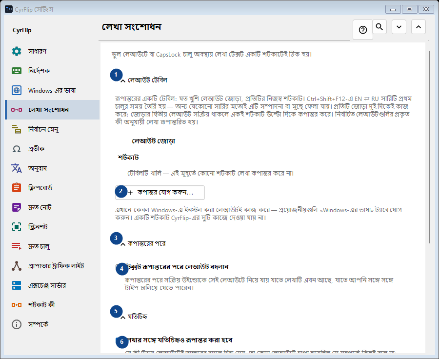
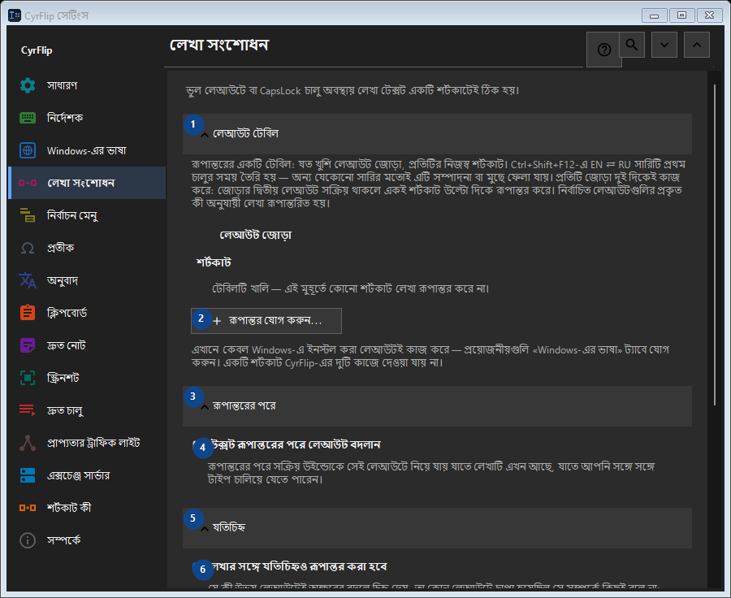

লেখা সংশোধন
এর কাজ
ভুল লেআউটে বা CapsLock চালু অবস্থায় লেখা টেক্সট একটি শর্টকাটেই ঠিক হয়।


ব্যবহারের ক্রম
সেটিং সঙ্গে সঙ্গে প্রয়োগ হয়। নির্দিষ্ট ক্রম নেই; নিচের দলগুলি ব্যবহার করুন।
উপাদান
1. লেআউট টেবিল
উল্লিখিত কাজের জন্য এই নির্দেশ ব্যবহার করুন। মেনে নেওয়ার আগে নিশ্চিতকরণ পড়ুন।
আপনার শর্টকাট2. রূপান্তর যোগ করুন...
উল্লিখিত কাজের জন্য এই নির্দেশ ব্যবহার করুন। মেনে নেওয়ার আগে নিশ্চিতকরণ পড়ুন।
আপনার শর্টকাট3. রূপান্তরের পরে
উল্লিখিত কাজের জন্য এই নির্দেশ ব্যবহার করুন। মেনে নেওয়ার আগে নিশ্চিতকরণ পড়ুন।
আপনার শর্টকাট4. টেক্সট রূপান্তরের পরে লেআউট বদলান
রূপান্তরের পরে সক্রিয় উইন্ডোকে সেই লেআউটে নিয়ে যায় যাতে লেখাটি এখন আছে, যাতে আপনি সঙ্গে সঙ্গে টাইপ চালিয়ে যেতে পারেন।
আপনার শর্টকাট5. যতিচিহ্ন
উল্লিখিত কাজের জন্য এই নির্দেশ ব্যবহার করুন। মেনে নেওয়ার আগে নিশ্চিতকরণ পড়ুন।
আপনার শর্টকাট6. লেখার সঙ্গে যতিচিহ্নও রূপান্তর করা হবে
যে কী উভয় লেআউটেই অক্ষরের বদলে চিহ্ন দেয়, তা কোন লেআউটে চাপা হয়েছিল সে সম্পর্কে কিছুই বলে না: «/»-এর রুশ কী-তে থাকে দাঁড়ি, আর সংখ্যা-প্যাডের «/» সর্বত্র একই এবং কপি করা লেখায় সাধারণটির থেকে আলাদা করা যায় না। এটি টিক দেওয়া থাকলে এমন চিহ্নও লেখার সঙ্গে রূপান্তরিত হয় - CyrFlip বরাবরই এমন আচরণ করে এসেছে। আপনি যদি এগুলি ইচ্ছা করেই বেশি লেখেন তবে টিক তুলে দিন: তখন «/ghbdtn» দাঁড়ি দিয়ে শুরু না হয়ে নিজের স্ল্যাশ ধরে রাখবে। যেসব চিহ্নের কী-তে অন্য লেআউটে অক্ষর থাকে (কমা, বন্ধনী) সেগুলি যেকোনো অবস্থাতেই রূপান্তরিত হয়।
আপনার শর্টকাট7. অক্ষরের কেস
উল্লিখিত কাজের জন্য এই নির্দেশ ব্যবহার করুন। মেনে নেওয়ার আগে নিশ্চিতকরণ পড়ুন।
আপনার শর্টকাট8. CapsLock ঠিক করুন
নির্বাচিত লেখার বড় ও ছোট হাতের অক্ষর অদলবদল করে; ভুলবশত CapsLock চালু থাকলে কাজে লাগে।
আপনার শর্টকাট9. বদলান - CapsLock ঠিক করুন
উল্লিখিত কাজের জন্য এই নির্দেশ ব্যবহার করুন। মেনে নেওয়ার আগে নিশ্চিতকরণ পড়ুন।
আপনার শর্টকাট10. কেস সংশোধনের পরে CapsLock সমন্বয় করুন
কেস সংশোধনের পরে CapsLock-এর প্রকৃত অবস্থা বদলে দেয়, যাতে পরবর্তী কীস্ট্রোক সংশোধিত টেক্সটের সঙ্গে মেলে।
আপনার শর্টকাট